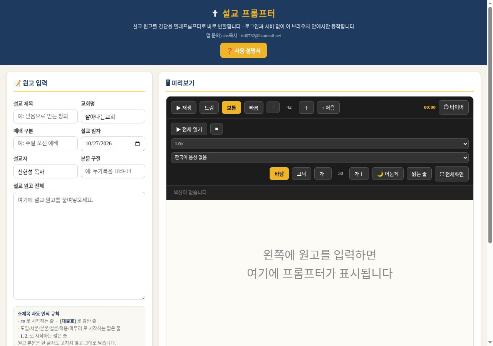
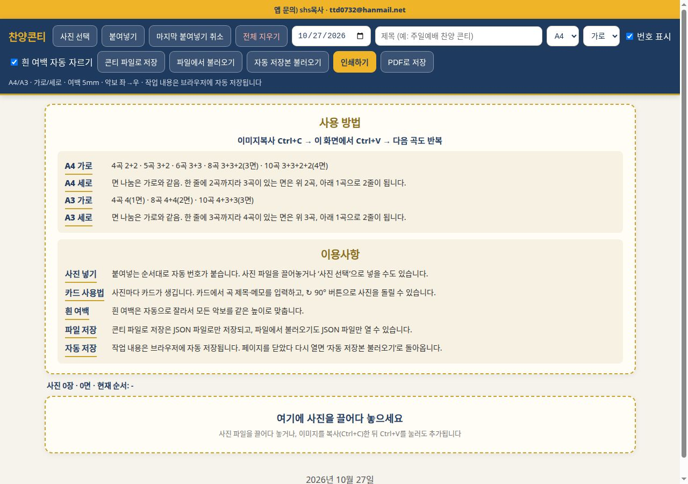
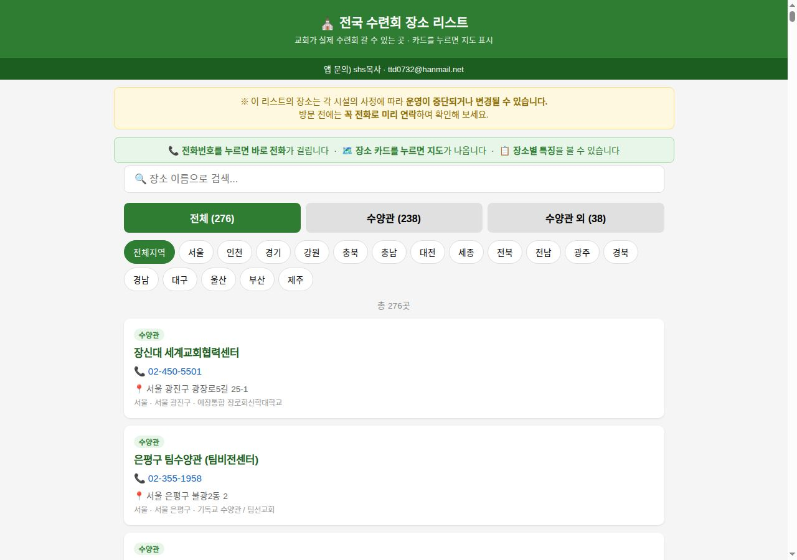
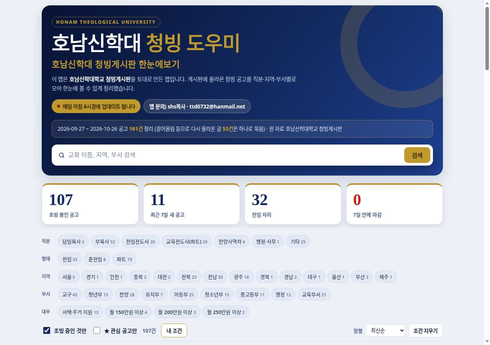

📖
🔑 비번 필요GraceSlide Pro
성경 본문을 넣으면 설교 슬라이드가 만들어집니다. 글자 크기와 사진 크기를 자유롭게 조절해 강단 화면에 맞게 쓸 수 있습니다.
설교 준비 · 슬라이드
자세히 보기 →
설교 준비부터 예배, 사역 정보까지.
필요할 때 꺼내 쓰는 목사님의 도구 상자입니다.
신현성 목사 · 살아나는교회
살아나서 살리는
살아나는교회(리바이브처치)
예장통합
광주 서구 화정로 126 (2층)
주일예배 오전 11:00
성경 본문을 넣으면 설교 슬라이드가 만들어집니다. 글자 크기와 사진 크기를 자유롭게 조절해 강단 화면에 맞게 쓸 수 있습니다.

설교 원고를 붙여넣으면 화면이 천천히 흘러가며 낭독까지 도와줍니다. 강단에서 원고를 들고 읽지 않아도 되는 프롬프터입니다.

악보 사진을 붙여넣으면 예배 순서에 맞게 자동으로 배치해 인쇄용 콘티를 만듭니다. A4·A3, 8곡·10곡 배치가 됩니다.

전국 276곳의 수련회 장소를 지역별로 찾아보고, 지도와 전화번호를 바로 확인할 수 있습니다. 방문 전에는 꼭 전화로 먼저 확인하세요.

호남신학대 관련 청빙 소식을 매일 정리해 보여줍니다. 새로운 소식이 올라오면 자동으로 갱신됩니다.
목사님이 심방 가실 때, 상황별·구절별로 말씀과 기도를 바로 찾는 앱입니다. 12개 카테고리·60개 상황, 구절별 11단계 심방 순서와 녹음·변환, 전체 다운로드가 됩니다.
이름만 적으면 개인·교회 도장 샘플이 바로 나옵니다. 로그인·비번 없이 누구나 무료로 쓰고, PNG·JPG로 내려받아 문서에 찍을 수 있습니다.
찾는 도구가 없습니다. 다른 단어로 검색해 보세요.
Pastor 앱 box와 각 앱의 조회수입니다. 새로고침은 같은 세션에서 중복 집계되지 않습니다.
| 앱 | 오늘 | 이번 주 | 누적 |
|---|---|---|---|
| GraceSlide Pro | 집계 중 | 집계 중 | 집계 중 |
| 설교프롬프터 | 집계 중 | 집계 중 | 집계 중 |
| 찬양콘티 | 집계 중 | 집계 중 | 집계 중 |
| 전국 수련회 장소 리스트 | 집계 중 | 집계 중 | 집계 중 |
| 호남 청빙 도우미 | 집계 중 | 집계 중 | 집계 중 |
| 대심방 | 집계 중 | 집계 중 | 집계 중 |
| 도장 메이커 | 집계 중 | 집계 중 | 집계 중 |
앱별 조회수는 상세페이지를 연 횟수입니다. Pastor 앱 box 자체 조회수는 이 페이지를 연 횟수입니다.